Тема 3. Будова приймача РЕР
Тут зібрано все для практичної частини теми: вправа з блоками приймача, відповіді до якої можна перевірити на цій сторінці, аркуш для друку, схема до завдання 2, інструкції до завдань 3 і 4, модель антенної решітки й відповіді.
Вправа № 1. Простежте сигнал у приймачі
Пост П1 приймає передачу радіостанції Д2 на частоті 300 МГц спрямованою антеною. На рис. 3.7 блоки приймача поста показано без назв і не за порядком. Ліворуч від кожного блока намальовано те, що надходить до блока, а праворуч те, що з блока виходить. Працюйте в парі.

- Назвіть блоки А, Б, В, Г і Д. Розташуйте блоки за порядком, від антени до екрана.
- Запишіть, що переходить від блока до блока. Обчисліть довжину радіохвилі за правилом із теми 2 і довжину півхвильового диполя для цієї хвилі.
- Назвіть блок, що спричинив кожну з трьох несправностей. Перша несправність: після сильного вітру сигнал радіостанції зник, зате з’явилися сигнали з іншого боку. Друга несправність: поруч запрацював потужний передавач, сигнал радіостанції спотворився, а на спектрограмі з’явилися сигнали, яких в ефірі немає. Третя несправність: спектрограма працює, але запис ефіру обірвався на 40-й секунді. Перед записом на диску було вільно 4 ГБ.
- Тепер пост має прийняти сигнал пульта керування безпілотником на частоті близько 2440 МГц. Які блоки треба замінити, які налаштувати по-новому (змінити налаштування чи програму), а які залишити без змін? Обчисліть довжину диполя для цього сигналу.
Перевірте себе
Для кожного блока оберіть назву, місце за порядком і те, що з ним зробити в кроці 4. Нижче оберіть відповіді до кроків 2, 3 і 4 й натисніть «Перевірити». Що переходить від блока до блока, запишіть на аркуші або в зошиті: сторінка цього не перевіряє. Кнопка «Показати пояснення» відкриває відповіді до всіх кроків.
Аркуш для друку
Аркуш до вправи № 1 і завдання 2 (файл PDF, дві сторінки формату А4). На першій сторінці текст вправи, рис. 3.7, збільшений в 1,5 раза, і таблиця для відповідей. На другій завдання 2: схема приймача і таблиця, у якій блокам рис. 3.2 добирають блоки схеми.
Фільтр і перетворювач частоти
Це інтерактивна демонстрація до рис. 3.2, б підручника. Це модель: шум не показано. Угорі показано сигнали багатьох передавачів, які приймає антена. Рамка показує смугу, яку пропускає фільтр приймача поста П1: вона завширшки 20 МГц. Унизу ту саму смугу розтягнуто на всю ширину рисунка: такою смуга надходить до аналого-цифрового перетворювача (АЦП). Підсилювач зробив сигнали втричі вищими, а перетворювач частоти переніс смугу на частоти від 0 до 20 МГц. Повзунок задає частоту посередині смуги.
Приймач налаштовано на 300 МГц. Фільтр пропускає смугу від 290 до 310 МГц: у ній 1 сигнал.
Налаштуйте приймач так, щоб у смугу потрапили всі 6 станцій радіомовлення. Яка це частота? Перевірте себе за відповідями.
Аналого-цифровий перетворювач
Це інтерактивна демонстрація до рис. 3.6, б підручника. Сіра лінія — це сигнал, який робить 9 коливань. Точки — це відліки, які бере аналого-цифровий перетворювач (АЦП). Через відліки можна провести багато хвиль. Приймач бере найповільнішу з цих хвиль: цю хвилю показує червоний пунктир. Повзунок змінює кількість відліків.
10 відліків на 9 коливань сигналу: 1,1 на одне коливання. Червона хвиля робить 1 коливання: це хибний сигнал, якого не було.
Додавайте по одному відліку. Знайдіть найменшу кількість відліків, за якої червона хвиля збігається із сигналом. Скільки це відліків на одне коливання? Порівняйте з правилом теми: більш ніж два відліки на кожне коливання. Перевірте себе за відповідями.
Схема до завдання 2
У підручнику завдання 2 записано так:
GNU Radio — це безкоштовна програма, у якій приймач складають із готових блоків. На сторінці теми й на аркуші є схема приймача радіомовних станцій із частотною модуляцією (FM). Знайдіть на схемі блоки, що виконують роботу блоків рис. 3.2. Яких блоків рис. 3.2 на схемі немає? Чому?
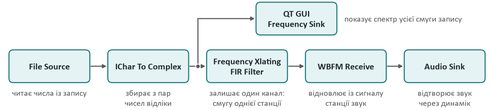
Як читати схему. Сигнал іде за стрілками, зліва направо. Назви блоків англійські: так їх пише програма. Біля кожного блока написано, що він робить. Порівняйте схему з рис. 3.2: для кожного з п’яти його блоків знайдіть блоки схеми, які виконують ту саму роботу. Блок схеми може не виконувати роботи жодного блока рисунка.
Такий вигляд ця схема має в програмі GNU Radio Companion. Під назвою кожного блока програма пише його параметри. Блоки Options і Variable до приймача не належать: вони зберігають налаштування схеми.
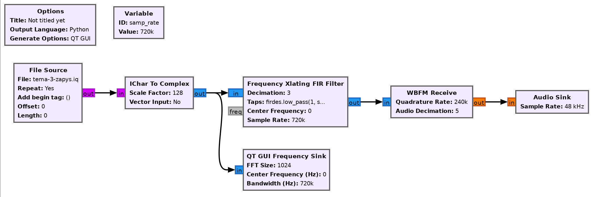

Інструкція до завдання 3: FM-приймач у GNU Radio
У підручнику завдання 3 записано так:
Потрібен комп’ютер із програмою GNU Radio. За інструкцією на сторінці теми складіть приймач із завдання 2 і прослухайте обчислений запис ефіру. Скільки радіомовних станцій у записі? Що передає кожна станція?
Запис ефіру: tema-3-zapys.iq. Завантажте цей файл і збережіть у теці, яку легко знайти. Відкривати файл не потрібно: його читає блок File Source. Це модель: числа запису обчислено, а не прийнято з ефіру.
У темі відлік записано одним числом. У цьому записі відлік складається з двох чисел: за ними приймач розрізняє, вище чи нижче від середини смуги стоїть станція. Ці два числа позначають літерами I та Q. Запис триває 4 с. За секунду в ньому 720 000 відліків, а кожне число займає один байт: 720 000 · 2 · 4 = 5 760 000 байтів, тобто 5,76 МБ.
Рисунки показують вікна GNU Radio версії 3.10.12 у системі Linux. В інших версіях програми, а також у системах Windows і macOS вікна можуть мати трохи інший вигляд. Якщо крок не збігається з тим, що ви бачите на екрані, знайдіть назву з цього кроку в меню програми.
Як встановити програму
GNU Radio входить до набору програм radioconda. Інсталятори цього набору лежать на сторінці radioconda-installer. Для встановлення потрібно близько 5 гігабайтів вільного місця на диску. Схеми складають у частині GNU Radio, яка називається GNU Radio Companion: цю частину ви запускатимете.
Термінал — це програма, у якій команди вводять текстом: після кожної команди натискають клавішу Enter. У macOS термінал лежить у теці «Програми», у вкладеній теці «Утиліти». У Linux термінал є в меню програм.
- Windows. Завантажте файл, назва якого закінчується на
Windows-x86_64.exe, і двічі клацніть його. Після встановлення відкрийте в меню «Пуск» теку radioconda і запустіть GNU Radio Companion. Якщо в цій теці немає GNU Radio Companion, запустіть із неї radioconda Prompt: це термінал набору radioconda. У цьому терміналі введіть командуgnuradio-companion. - macOS. Завантажте файл
MacOSX-arm64.pkg(процесор Apple) абоMacOSX-x86_64.pkg(процесор Intel) і двічі клацніть завантажений файл. Який процесор має ваш Mac, показує меню Apple, пункт «Про цей комп’ютер»: у рядку «Чип» названо процесор Apple, у рядку «Процесор» процесор Intel. Після встановлення введіть у терміналі дві команди:conda activate base, а потімgnuradio-companion. - Linux. Завантажте файл, назва якого закінчується на
Linux-x86_64.sh. Відкрийте термінал і перейдіть у теку з цим файлом: введітьcd, пробіл і назву теки, наприкладcd Downloads. Потім введітьbash radioі натисніть клавішу Tab: термінал допише назву файлу. Натисніть Enter. Інсталятор ставить запитання англійською. Спершу натисніть Enter і гортайте текст ліцензії пробілом. На запитання про ліцензію введітьyes, на два наступні натисніть Enter. Потім закрийте термінал, відкрийте його знову і введіть дві команди:conda activate base, а потімgnuradio-companion.
Як скласти приймач
Меню, блоки й параметри програма називає англійською: в інструкції ці назви записано так, як на екрані. Кожну дію можна вибрати в меню або викликати клавішею, яку вказано в дужках. На комп’ютері Mac замість клавіші Ctrl натискають клавішу Command.
Відкрийте порожню схему. Після запуску програма показує порожню схему. Якщо відкрито іншу схему, створіть нову: меню File, пункт New (клавіші Ctrl+N). У порожній схемі вже стоять два блоки: Options і Variable.
Угорі вікна стоять меню і ряд кнопок. Білий аркуш посередині призначений для схеми. Праворуч стоїть перелік блоків програми. Унизу ліворуч програма пише свої повідомлення. Таблиця праворуч від повідомлень повторює блок Variable: для завдання ця таблиця не потрібна.

Вікно GNU Radio Companion з порожньою схемою Відкрити рисунок окремо Задайте швидкість запису. Двічі клацніть блок Variable. Відкриється вікно «Properties: Variable». У полі Value замініть 32000 на
720000: стільки відліків за секунду містить запис. Натисніть кнопку OK унизу вікна: рисунок нижче показує лише верхню частину вікна.Блок Variable зберігає це число під іменем
samp_rate, і решта блоків бере число за цим іменем. На самому блоці програма пише число коротко: 720k.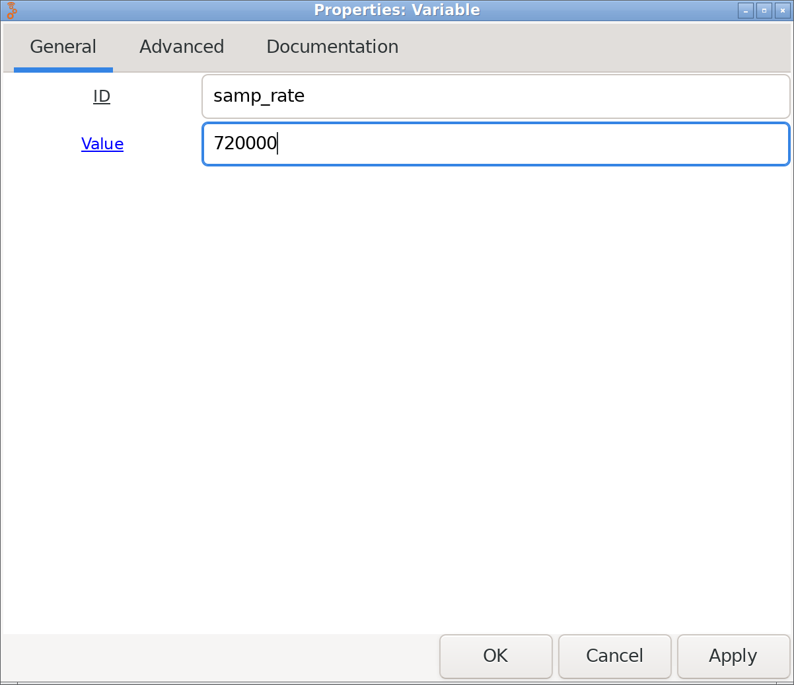
Параметри блока Variable Відкрити рисунок окремо Угорі вікна стоять назви вкладок: параметри блока розкладено по них. Вікно відкривається на вкладці General. Деякі назви параметрів програма підкреслює або робить синіми: для завдання ці позначки не потрібні.
Додайте шість блоків. Відкрийте пошук блоків: меню View, останній пункт Find Blocks (клавіші Ctrl+F). Над переліком блоків з’явиться поле пошуку. Введіть у це поле назву блока й натисніть Enter: блок з’явиться на аркуші схеми.
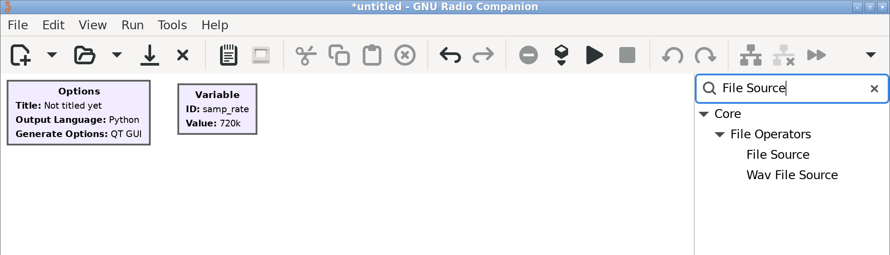
Пошук блока за назвою Відкрити рисунок окремо Так додайте всі шість блоків: File Source, IChar To Complex, Frequency Xlating FIR Filter, WBFM Receive, Audio Sink, QT GUI Frequency Sink. Після кожного натискання Enter перевірте назву блока, що з’явився. Зайвий блок клацніть і вилучіть: меню Edit, пункт Delete (клавіша Delete).
Новий блок з’являється десь посередині аркуша. Перетягніть блок мишею на вільне місце, щоб блоки стояли, як на рисунку нижче.
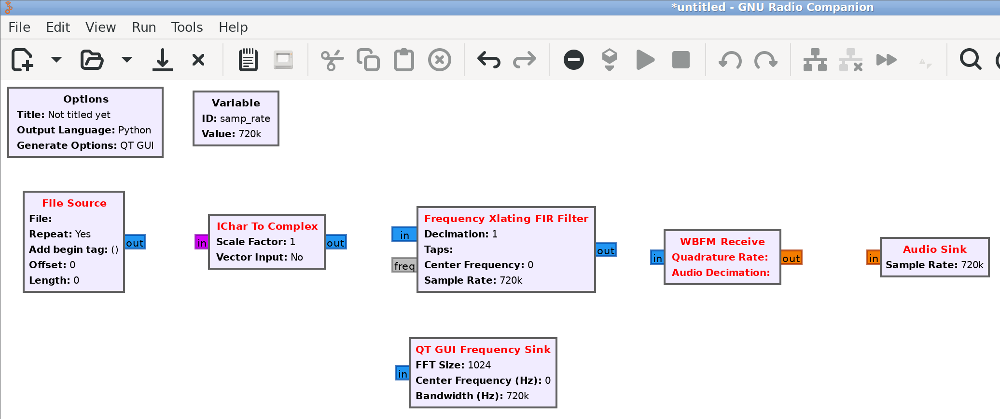
Шість блоків додано: назви червоні, кнопка ▶ сіра Відкрити рисунок окремо Назва нового блока червона. Так програма позначає блок, який ще не готовий до роботи: такому блокові бракує значення параметра або з’єднання з іншим блоком. Поки на схемі є червона назва, кнопка ▶ сіра і схему запустити не можна.
Під назвою кожного блока програма пише його параметри: потрібні з них названо в кроці 4.
Задайте параметри блоків. Двічі клацніть блок: відкриється вікно параметрів цього блока. Значення параметра впишіть у поле праворуч від назви параметра. Деякі параметри замість поля мають список значень. Клацніть цей список і оберіть у ньому потрібне значення. Праворуч від поля стоїть підказка у квадратних дужках: підказка називає вид значення, яке має бути в полі. Підказка [string] означає текст, [int] ціле число, [float] і [real] будь-яке число, [real_vector] ряд чисел. Змінюйте лише параметри, названі нижче: решту залиште, як є. Вікно закриває кнопка OK. Рисунки показують верхню частину кожного вікна.
File Source. File: натисніть кнопку «...» праворуч від поля. Відкриється вікно «Open a Data File...». Знайдіть у цьому вікні завантажений файл
tema-3-zapys.iqі натисніть кнопку Open. Output Type:byte. Repeat:Yes. Зі значенням Yes блок після кінця запису починає читати запис із початку.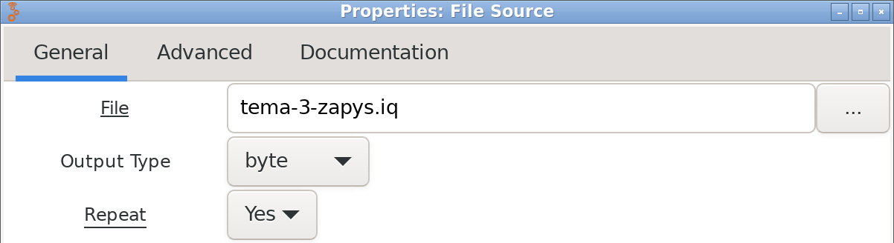
Параметри блока File Source Відкрити рисунок окремо IChar To Complex. Scale Factor:
128. Байт запису містить ціле число від −128 до 127. Блок ділить це число на 128, тому далі числа лежать між −1 і 1.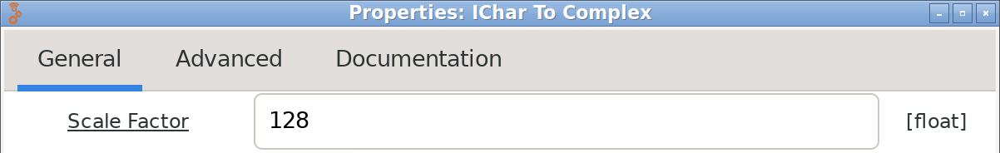
Параметри блока IChar To Complex Відкрити рисунок окремо Frequency Xlating FIR Filter. Type:
Complex->Complex (Real Taps). Decimation:3. Taps:firdes.low_pass(1, samp_rate, 100e3, 40e3). Center Frequency:0. Запис100e3означає: 100 помножити на 1000, тобто 100 000. Число100e3задає межу фільтра: 100 кГц в обидва боки від вибраної частоти. Число40e3задає ширину цієї межі: фільтр закривається поступово, на відрізку завширшки 40 кГц.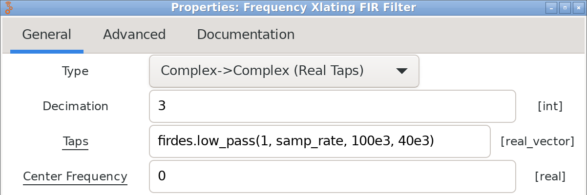
Параметри блока Frequency Xlating FIR Filter Відкрити рисунок окремо WBFM Receive. Quadrature Rate:
240000. Audio Decimation:5.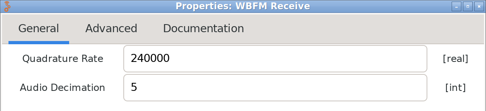
Параметри блока WBFM Receive Відкрити рисунок окремо Audio Sink. Sample Rate:
48 kHz. Це значення оберіть зі списку значень.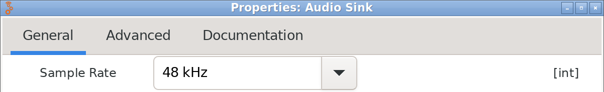
Параметри блока Audio Sink Відкрити рисунок окремо QT GUI Frequency Sink. Параметрів не змінюйте.
З’єднайте блоки. Вихід блока стоїть на його правому краї й підписаний out. Вхід стоїть на лівому краї й підписаний in. Клацніть вихід блока File Source, а потім вхід блока IChar To Complex: між ними з’явиться лінія зі стрілкою. Так само з’єднайте решту блоків, як на рисунку нижче. Вихід блока IChar To Complex з’єднайте з двома блоками: Frequency Xlating FIR Filter і QT GUI Frequency Sink. Сірий вхід freq залишається вільним.
Колір виходу і входу показує вид чисел: фіолетовий означає байти запису, синій відліки з двох чисел, помаранчевий значення звуку. Вихід і вхід, які ви з’єднуєте, мають бути одного кольору. Якщо кольори різні, перевірте параметр Output Type блока File Source і параметр Type блока Frequency Xlating FIR Filter. Коли всі блоки налаштовано і з’єднано, їхні назви стають чорними, а кнопка ▶ теж чорною.
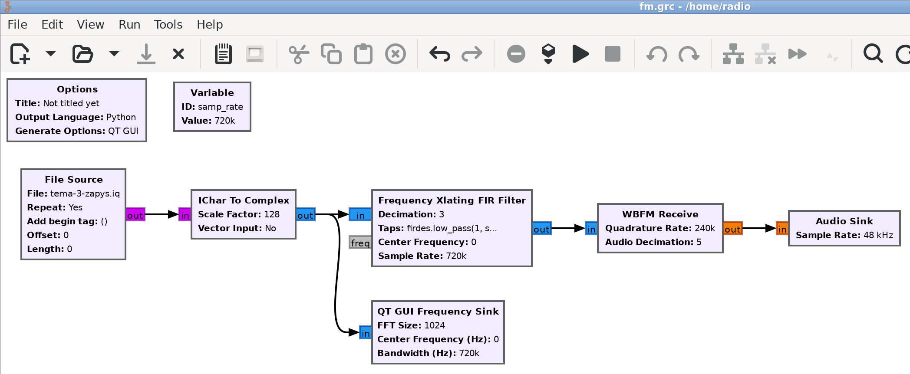
Готова схема: назви блоків чорні, кнопка ▶ чорна Відкрити рисунок окремо Збережіть схему: меню File, пункт Save (клавіші Ctrl+S). Програма відкриє вікно «Save a Flow Graph to a File...» і запропонує назву
untitled.grc, у якій виділено слово untitled. Введіть замість цього слова fm і натисніть Enter: схема збережеться у файліfm.grc. Якщо ви стерли всю назву, введіть її повністю:fm.grc.Запустіть схему. Спершу зробіть звук комп’ютера тихішим: звуки запису гучні. Запустіть схему: меню Run, пункт Execute (клавіша F6 або кнопка ▶). Під час першого запуску програма може показати вікно «Warning: missing xterm executable». Це вікно повідомляє англійською, що програма не знайшла на комп’ютері термінала. Цій схемі термінал не потрібен: натисніть OK. Таке вікно з’являється лише раз.

Попередження під час першого запуску Відкрити рисунок окремо Відкриється вікно «Not titled yet» зі спектром, і зазвучить запис. Щоб зупинити схему, перейдіть у вікно програми GNU Radio Companion і виберіть там меню Run, пункт Kill (клавіша F7 або кнопка ■).
Знайдіть інші станції. Вікно показує спектр усієї смуги запису. На осі Frequency (kHz) стоїть частота в кілогерцах, відлічена від середини смуги: від’ємні числа означають частоти, нижчі від середини. Кожна станція піднімається над шумом. Поки станція не передає звуку, вона має вигляд вузького піка. Коли станція передає звук, пік розширюється в горб і змінює форму.
Вертикальна вісь Relative Gain (dB) показує потужність сигналу в децибелах (дБ): що вище точка кривої, то сильніший сигнал на цій частоті. Децибели порівнюють потужності: кожні 10 дБ угору означають удесятеро більшу потужність. Програма не знає справжньої потужності сигналу, тому відлічує децибели від власного умовного нуля. Підпис Data 0 праворуч і тонку лінію на позначці 0 додає програма: для завдання вони не потрібні.
Спершу ви чуєте станцію посередині смуги: параметр Center Frequency дорівнює 0. Щоб почути іншу станцію, прочитайте на осі її частоту й зупиніть схему. Двічі клацніть блок Frequency Xlating FIR Filter і впишіть цю частоту в параметр Center Frequency. Частоту вписують у герцах: 150 кГц записують як
150e3, а −150 кГц як-150e3. Запустіть схему знову.


Звідки взято числа параметрів. Блок Frequency Xlating FIR Filter залишає кожен третій відлік: 720 000 / 3 = 240 000 відліків за секунду. Блок WBFM Receive видає одне значення звуку на кожні 5 відліків: 240 000 / 5 = 48 000 значень за секунду. Таку швидкість звуку пропонує блок Audio Sink: у списку значень вона записана як 48 kHz.
Якщо ваша схема не запускається, порівняйте її з готовою: fm-hotova.grc. Завантажте цей файл і збережіть у теці, яку легко знайти. Потім відкрийте файл у програмі: меню File, пункт Open (клавіші Ctrl+O). У блоці File Source готової схеми вкажіть свій файл запису, як у кроці 4.
Інструкція до завдання 4: півхвильовий диполь
У підручнику завдання 4 записано так:
Потрібні дріт і лінійка. Розрахуйте півхвильовий диполь для радіомовної станції вашого міста. Диполь складається з двох відрізків дроту, кожен завдовжки чверть довжини хвилі. Виготовте диполь за інструкцією на сторінці теми. Підготуйте короткий звіт із фото або рисунком.
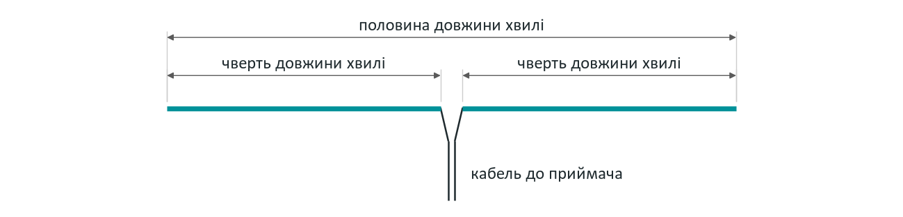
Що потрібно. Два відрізки дроту, лінійка, антенний кабель зі штекером, ізоляційна стрічка, дерев’яна рейка і приймач з антенним гніздом: наприклад, музичний центр або USB-приймач RTL-SDR.
- Налаштуйте приймач на радіомовну станцію і прочитайте на приймачі частоту станції в мегагерцах.
- Обчисліть довжину хвилі за правилом із теми 2: 300 поділіть на частоту в мегагерцах. Для станції на частоті 100 МГц: 300 / 100 = 3 м. Кожен відрізок дроту має чверть цієї довжини: 3 / 4 = 0,75 м, тобто 75 см.
- Відміряйте лінійкою й відріжте два відрізки дроту обчисленої довжини.
- Закріпіть обидва відрізки на одній прямій, наприклад на дерев’яній рейці. Між їхніми ближніми кінцями залиште проміжок близько 1 см: відрізки не мають торкатися один одного. Замість рейки можна взяти тримач, надрукований на 3D-принтері.
- Приєднайте кабель. Зніміть ізоляцію з кінця антенного кабелю: під ізоляцією є центральна жила й обплетення навколо жили. Центральну жилу прикрутіть до ближнього кінця одного відрізка, а обплетення до ближнього кінця другого. Кожне з’єднання обмотайте ізоляційною стрічкою, щоб жила й обплетення не торкалися одне одного. Штекер кабелю вставте в антенне гніздо приймача.
- Слухайте станцію і повертайте антену. Диполь найкраще приймає з напрямків упоперек дроту, а найгірше вздовж нього.
- Запишіть, у якому положенні прийом найкращий. Для звіту сфотографуйте або намалюйте антену.
Справжній диполь роблять трохи коротшим, ніж половина довжини хвилі. Для прийому така точність не головна: диполь приймає і на сусідніх частотах.
Безпека. Антену під’єднуйте лише до антенного гнізда приймача. Не торкайтеся дротом розеток та електропроводки. Не виносьте антену надвір під час грози.
Модель антенної решітки
Це фазована антенна решітка з рис. 3.4, в і г. Передавач стоїть спереду праворуч, тому його хвиля доходить до правих елементів решітки раніше, ніж до лівих. Через це сигнали передавача з різних елементів зсунуті в часі та послаблюють один одного.
Решітка затримує сигнал кожного елемента на свій час і лише тоді додає сигнали. Затримку задано в частках періоду, тобто часу одного коливання: таку затримку називають зсувом фази. Доберіть затримку, за якої гребені всіх сигналів стануть один під одним. Сума стане найбільшою, а промінь повернеться на передавач.
Промінь спрямовано прямо перед решіткою. Ширина променя 13°. Сигнали передавача гасять один одного: суми майже немає.
Чому всі канали обробляють одночасно
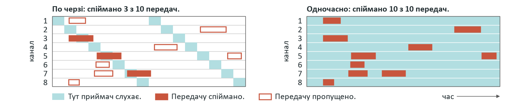
Обидва приймачі працюють у смузі з 8 каналів, у якій за той самий час з’являється 10 коротких передач. Перший приймач налаштовується на канали по черзі й за цей час двічі обходить усю смугу. Цей приймач прийняв 3 передачі з 10: решту передано в каналах, на які приймач у той момент не був налаштований. Другий приймач обробляє всі канали одночасно, як ПЛІС, і прийняв усі 10.
Відповіді
Відповіді до вправи, контрольних запитань і завдань теми. Спершу виконайте вправу самостійно.
Публікації, з яких узято дані сторінки
- GNU Radio. Репозиторій програми GNU Radio на сайті GitHub, англійською мовою. З файлів програми взято назви блоків схеми, назви їхніх параметрів і клавіші, якими схему зберігають, запускають і зупиняють.
- radioconda-installer. Сторінка проєкту radioconda на сайті GitHub, англійською мовою. З неї завантажують інсталятори набору програм, до якого входить GNU Radio.
- Antenna Basics. Публікація компанії Rohde & Schwarz про основи антен, 2015 р., англійською мовою. З неї взято відомості про півхвильовий диполь і про те, як вимірюють ширину променя антени.
- About RTL-SDR. Сторінка сайту RTL-SDR.com, англійською мовою. Розповідає про USB-приймач зі вступу до теми: його називають RTL-SDR, бо він походить від телевізійних приймачів на мікросхемі RTL2832U.
Фото з Wikimedia Commons
Фотографії на рис. 3.1 і 3.5 підручника взято зі сховища вільних зображень Wikimedia Commons. Для друку кожну з них зменшено й обрізано. Назва фотографії веде на її сторінку в сховищі: там зазначено автора й умови використання.
- Рис. 3.1, а: RealTek RTL2838 DVB-T USB Stick. Автор: Florian Fuchs. Ліцензія: CC BY-SA 3.0.
- Рис. 3.1, б: Digital SDR-Radio Tuner Realtek RTL2832U Elonics E4000 (8924934253). Автор: Artem M. Ліцензія: CC BY-SA 2.0.
- Рис. 3.5, фото 1: Walkie talkie (40655681650). Автор: «unmatched value». Ліцензія: CC BY 2.0.
- Рис. 3.5, фото 2: 5.8 GHz cloverleaf antenna with SMA connector. Автор: Lucasbosch. Ліцензія: CC BY-SA 3.0.
- Рис. 3.5, фото 3: YagiAntenna. Автор: Raysonho. Ліцензія: CC0.
- Рис. 3.5, фото 4: VHF UHF LP-antenna. Автор: K. Krallis, SV1XV. Умова використання: зазначати автора.
- Рис. 3.5, фото 5: SatelliteDishBrickWall. Автор: Raysonho. Ліцензія: CC0.
- Рис. 3.5, фото 6: Schwarzbeck BBHA 9120 D. Автор: Schwarzbeck Mess-Elektronik. Ліцензія: CC BY-SA 3.0.
- Рис. 3.5, фото 7: ILA Berlin 2012 PD 128. Автор: Bin im Garten. Ліцензія: CC BY-SA 3.0.
- Рис. 3.5, фото 8: Hammer Ace SATCOM Antenna. Автор: L. Comeger, U.S. Air Force. Суспільне надбання.

.jpg){kind=link}
.jpg){kind=link}